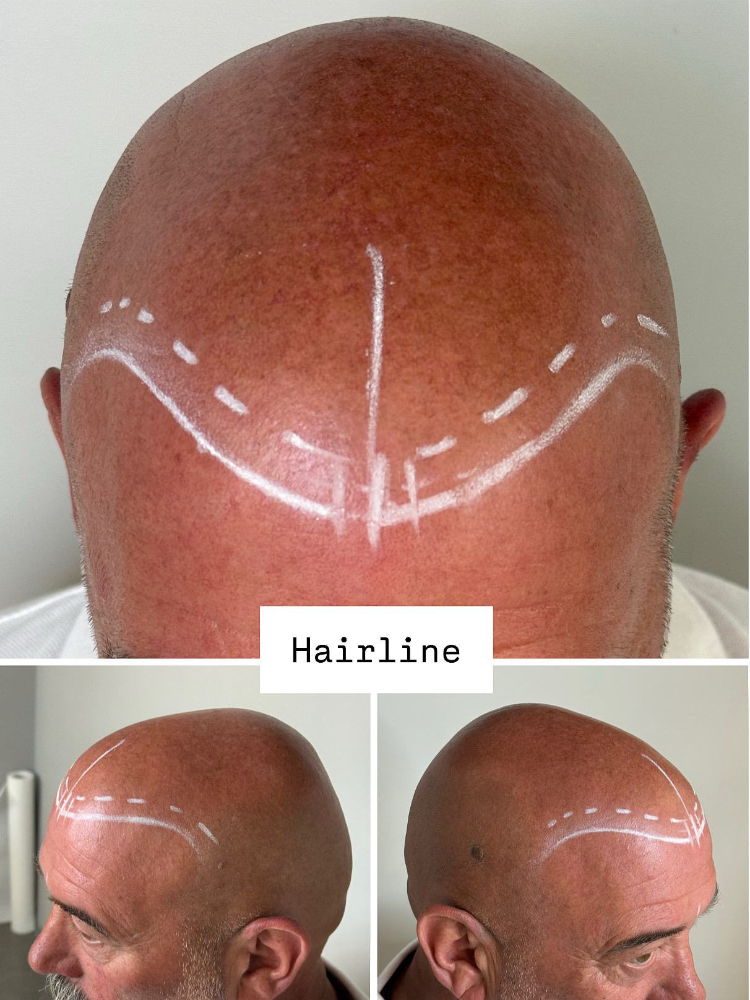
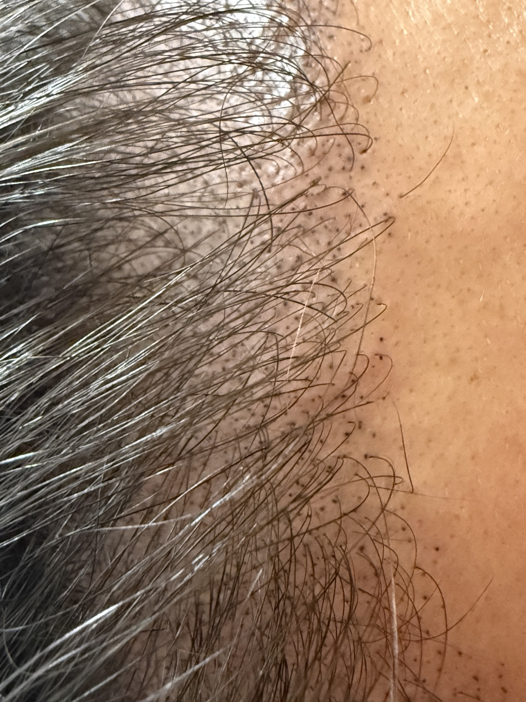
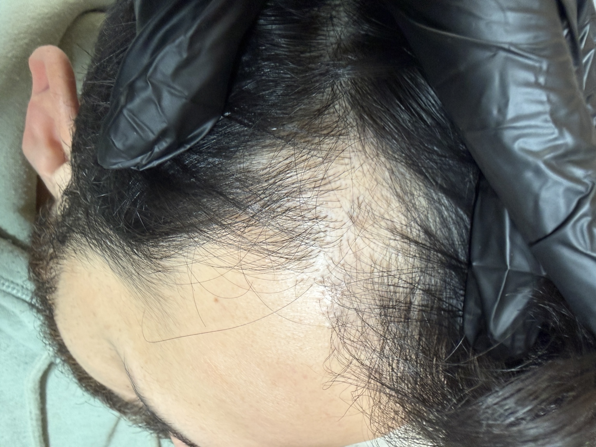
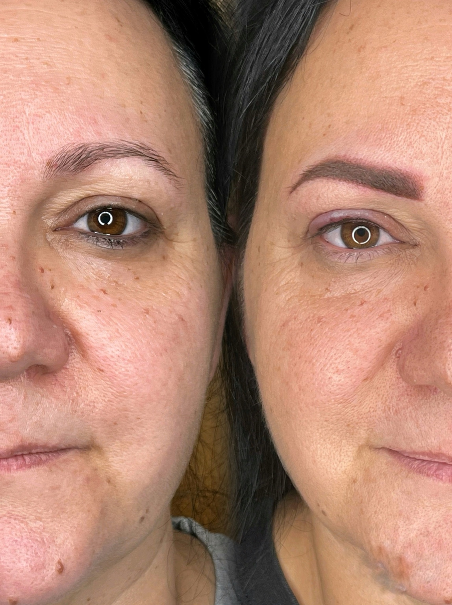

La naturalezza non si improvvisa.
Si progetta.
AUREALE è il progetto professionale di Simona Reale dedicato alla tricopigmentazione: analisi, progettazione e microdepositi studiati per integrarsi con cute, capelli residui e caratteristiche individuali.
Capire il trattamento è parte della scelta.
La tricopigmentazione non stimola la crescita dei capelli e non sostituisce una terapia medica. È un intervento di camouflage estetico che richiede progettazione, conoscenza della pelle e valutazione del risultato nel tempo.
01 · Tricopigmentazione
Effetto rasato, densità, hairline, donna e mimetizzazione di esiti cicatriziali.
Conosci il trattamento →02 · Metodo AUREALE
Non “riempire vuoti”: leggere zone, proporzioni, transizioni e obiettivo estetico.
Scopri il metodo →03 · Ricerca
Approfondimenti su pigmento, alopecia androgenetica, trapianto e biologia cutanea.
Apri il Journal →Dal dermografo alla specializzazione SMP.
Ogni cuoio capelluto è una mappa diversa.
Hairline, zona frontale, midscalp, vertex e tempie non vengono valutati come un'unica superficie. Durante la consulenza considero quali aree intervenire, come devono dialogare tra loro e quale risultato sia realistico.

Risultati reali. Contesto reale.
Le fotografie dei lavori sono utilizzate come documentazione del trattamento: niente ricostruzione del risultato e niente alterazioni della zona trattata.

Effetto rasato
Costruzione ottica attraverso microdepositi puntiformi e integrazione con le aree residue.
Vedi il caso →
Effetto densità
Riduzione del contrasto visivo tra cuoio capelluto e capelli presenti.
Vedi i casi →Conoscere prima di scegliere.
Una raccolta di approfondimenti pensata per separare il marketing dalle informazioni verificabili.
Tutti gli approfondimentiDermopigmentazione, separata dalla SMP.
Sopracciglia, labbra e occhi seguono protocolli e obiettivi differenti. Per questo il PMU ha una sezione autonoma, con i protocolli AUREALE e il proprio portfolio.

Roma Flaminio · Modena centro
Ricevo esclusivamente su appuntamento presso studi partner selezionati. La sede precisa viene comunicata in fase di prenotazione.
Parliamo del tuo caso.
La consulenza serve a valutare situazione di partenza, obiettivo, fattibilità e percorso più adatto.
WhatsApp · 392 2504898